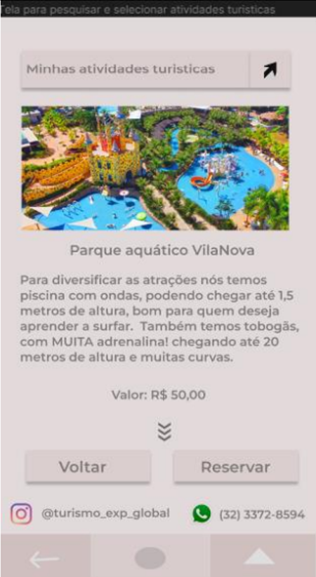
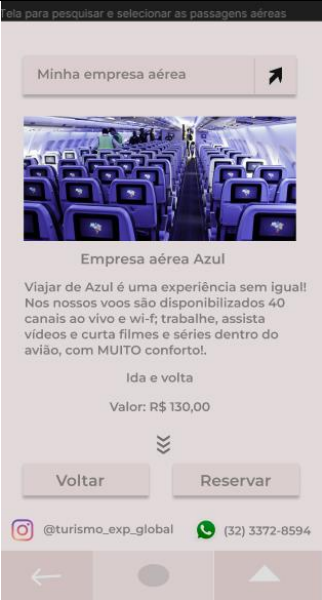

OLÁ, SOU A BRUNA LUANA DE OLIVEIRA SANTOS
Tenho 19 anos e moro em São João del-Rei - MG.
Interessei pela área de tecnologia quando estava com muito contato com um programador, e assim,
decidi explorar esse mundo. Estou interessando cada vez mais e extremamente satisfeita com a escolha.
Atualmente faço estágio na área de TI e venho aprimorando minhas habilidades com essa experiência.
Essa é a escolha para o meu futuro.
MINHAS FORMAÇÕES
Escolaridade:
Ensino Médio concluído na Escola Estadual Doutor Garcia de Lima.
Graduando em Análise e Desenvolvimento de Sistemas na Uninter.
Idiomas:
Inglês básico (realizando o curso da Uninter).
Histórico profissional:
- Jovem Aprendiz (1 ano).
- Assistente administrativo (1 ano e 2 meses).
- Estagiária de TI (Jul - até o momento).
Resumo profissional:
Com 16 anos consegui uma vaga de jovem aprendiz,
obtive meu primeiro contato com o mercado de trabalho e assim, adquiri muitos aprendizados com ambiente corporativo.
Quando acabou o meu contrato, recebi a proposta de ingressar de forma efetiva na empresa,
sendo auxiliar no setor administrativo.
Com isso, criei vinculo com a empresa que utilizavamos o sistema.
Confesso que fiquei encantada com as consultas via banco de dados e assim,
interessei pela área e decidi aprender sobre tal.
Logo após, escolhi a faculdade de Análise e Desenvolvimento de Sistemas, e com poucos meses, consegui um estágio na área.
Desde então, tenho uma ótima experiência e muitos conhecimentos.
MEUS PROJETOS
Realizei um projeto de atividade prática da faculdade, na disciplina de Fundamentos de Design de Sistemas, onde foi necessário desenvolver um protótipo de média fidelidade de apresentação para a empresa Exploração Global.
Foi necessário desenvolver em wireframes um app com as funcionalidades de pesquisar e reservar destinos, pesquisar e reservar acomodações, pesquisar e reservar atividades turisticas, além de pesquisar e reservar passagens aéreas.
 